KC-QUEST
เจาะลึกคำสั่ง plan ของ dag-planner
KC-QUEST อยู่ตรงไหน
บท 05 ให้ DAG + Gantt · บทนี้เปิดดูว่า ใครเป็นคนเลือกบัญชี ให้แต่ละบล็อก
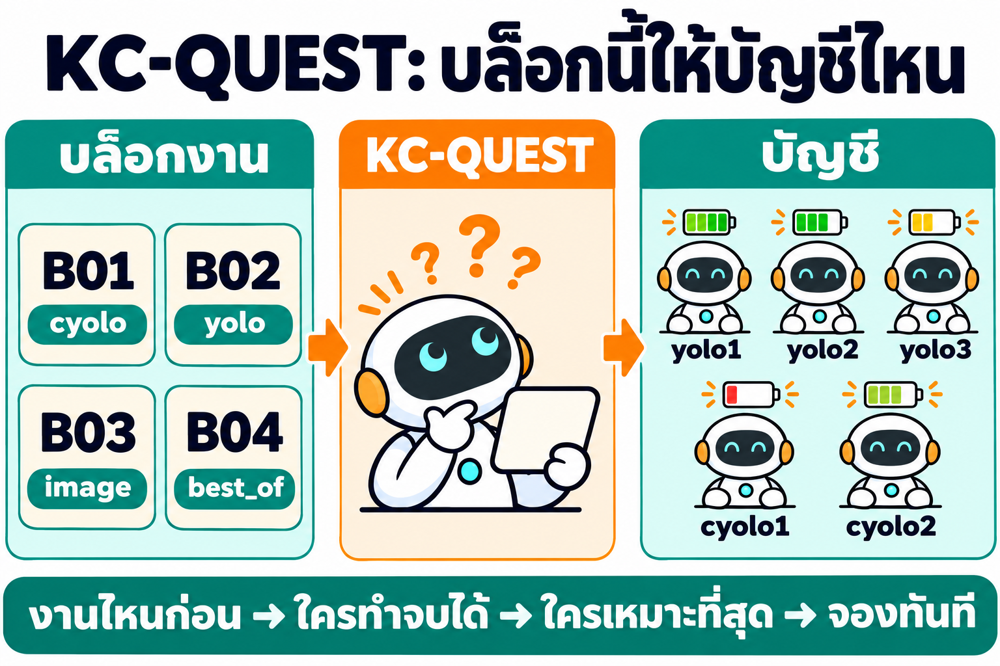

- ช่อง 3 ·
dagคิด rank และสายวิกฤต - ช่อง 4 ·
plan= KC-QUEST เลือกบัญชีให้ทุกบล็อก แล้วคำนวณเวลา - ช่อง 5 ·
runagent-team รันตามแผน - ช่อง 6 ·
reportเทียบแผนกับของจริง เก็บตัวปรับเวลา k
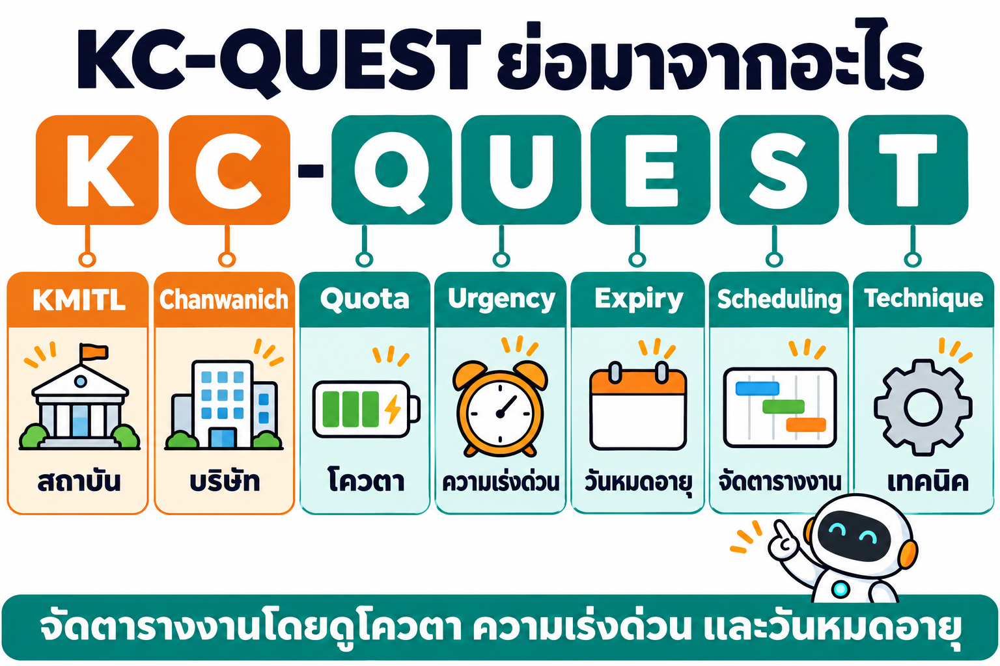
ไฟล์ที่เกี่ยวข้อง
| ไฟล์ | บทบาท |
|---|---|
base_skills/dag-planner/scripts/kcquest.py | อัลกอริทึม KC-QUEST ไฟล์เดียวกับที่ dagplan.py plan ของบท 05 ใช้ |
base_skills/agent-team/ | ตัวรันทีมจริง และแหล่งข้อมูลโควตา (team.py check · team.py quota) |
tools/kclab.py | โหมดสอน เรียก kcquest.py แล้วแสดงทุกตัวเลขที่มันคิด |
tools/sim.py · tools/test_kclab.py | ตัวจำลองเทียบวิธีอื่น · ตรวจว่าตัวเลขในบทเรียนตรงกับ base skill |
ข้อมูลที่ KC-QUEST ใช้
สองฝั่ง: บล็อกงาน (ขนาด · rank · สกิล) และ บัญชี (โควตา 2 ถัง · slot)

| ฟิลด์ | KC-QUEST ใช้ทำอะไร |
|---|---|
size | ขนาดงาน c = 0.6 / 1.5 / 3 ล้านโทเคน |
depends_on | คิด rank และรู้ว่าบล็อกไหนพร้อม |
skill | กำหนดฝั่ง และจำนวนบัญชีที่ต้องใช้ |
exclusive | บล็อกรวมและทดสอบ รันคนเดียว |
คิดย้อนจากบล็อกสุดท้าย
- สายวิกฤต = เส้นทางที่ rank ยาวที่สุด บล็อกบนสายนี้ช้าเท่าไร ทั้งโปรเจกต์ช้าเท่านั้น
- ระบบ 14 งานของบท 05: rank ของ A = 16 สายวิกฤต A → B → F → I → L → N คำนวณซ้ำได้ด้วยคำสั่งนี้
python tools/kclab.py rank --blocks examples/system14/blocks.json
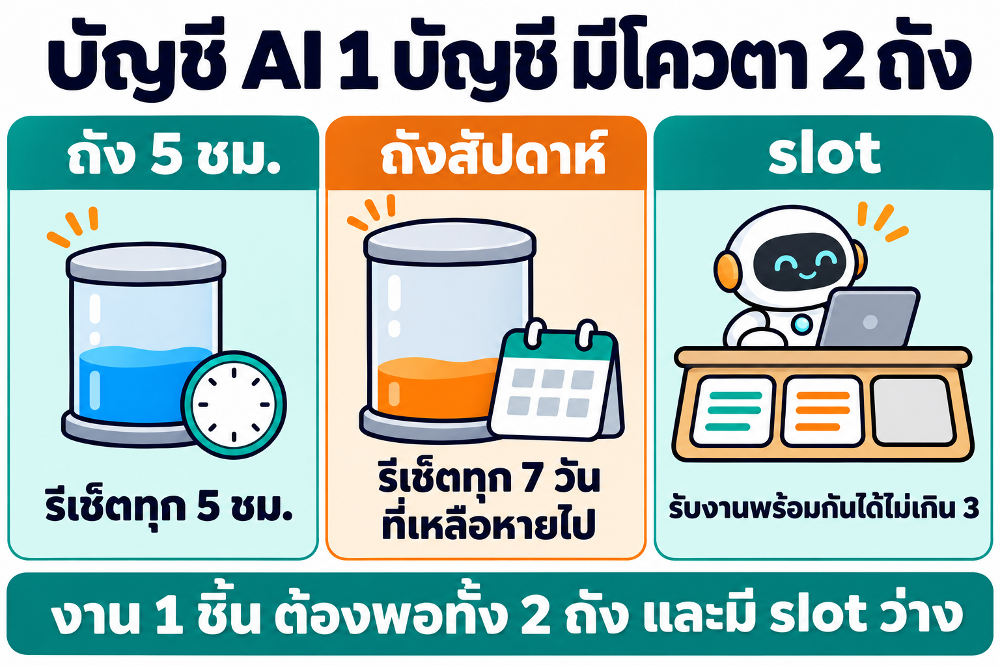
| สิ่งที่บัญชีมี | ความหมาย | สัญลักษณ์ |
|---|---|---|
| ถัง 5 ชม. | โควตาที่เหลือของรอบ 5 ชั่วโมง (%) | H5 |
| ถังสัปดาห์ | โควตาที่เหลือของสัปดาห์ (%) เหลือตอนรีเซ็ต = หาย | Hw |
| เวลารีเซ็ต | อีกกี่ชั่วโมงถังสัปดาห์จะรีเซ็ต | T |
| อัตรากินโควตา | ใช้ 1 ล้านโทเคน ถังลด 2.0% และ 0.25% | r5, rw |
| ความเร็ว | yolo 7.2 · cyolo 4.8 ล้านโทเคนต่อชั่วโมง | v |
| โควตาที่เหลือ (ถังที่น้อยกว่า) | slot |
|---|---|
| ไม่เกิน 2% | 0 |
| มากกว่า 2% ถึงไม่ถึง 16% | 1 |
| 16% ถึงไม่ถึง 24% | 2 |
| 24% ขึ้นไป | 3 |
team.py check และ team.py quota ของ agent-team
| บล็อก | ชื่อ | สกิล | ขนาด | ต้องรอ | rank |
|---|---|---|---|---|---|
| B01 | โครงโปรเจกต์ | cyolo | S · 0.6 | – | 3.6 |
| B02 | ข้อมูลสินค้า | yolo | S · 0.6 | – | 3.6 |
| B03 | ภาพสินค้า | image | S · 0.6 | – | 3.6 |
| B04 | สโลแกน | best_of | S · 0.6 | – | 2.1 |
| B05 | สไตล์ CSS | review | M · 1.5 | B01 | 3 |
| B06 | ตะกร้า | yolo | M · 1.5 | B02 | 3 |
| B07 | แสดงการ์ด | cyolo | M · 1.5 | B01–B03 | 3 |
| B08 | รวม + ทดสอบ | yolo 🔒 | M · 1.5 | B04–B07 | 1.5 |
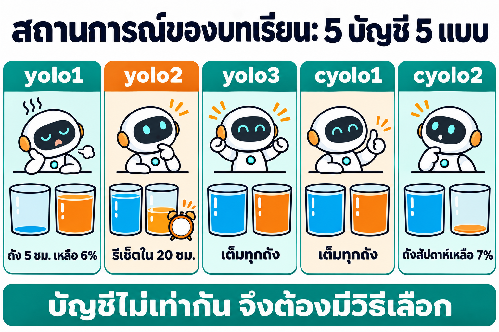
5 บัญชี จุดเด่นจุดด้อยต่างกัน
| บัญชี | ถัง 5 ชม. เหลือ | ถังสัปดาห์เหลือ | รีเซ็ตใน | slot | ลักษณะ |
|---|---|---|---|---|---|
| yolo1 | 6% | 80% | 130 ชม. | 1 | ถัง 5 ชม. ใกล้หมด |
| yolo2 | 90% | 45% | 20 ชม. | 3 | ถ้าไม่ใช้ โควตา 45% จะหายพรุ่งนี้ |
| yolo3 | 100% | 95% | 150 ชม. | 3 | เต็มทุกถัง |
| cyolo1 | 100% | 95% | 150 ชม. | 3 | เต็มทุกถัง |
| cyolo2 | 100% | 7% | 100 ชม. | 1 | ถังสัปดาห์เหลือน้อย |
น้ำมันในถัง = โควตาที่เหลือ · คูปองน้ำมันใกล้หมดอายุ = วันรีเซ็ตโควตา · ขนาดกล่อง = ขนาดงาน · น้ำมันต้องพอถึงปลายทาง = ทำจบได้
B02 (สกิล yolo ขนาด S) ควรให้บัญชีไหน
| วิธีที่คนมักนึกถึง | จะเลือก | จุดอ่อน |
|---|---|---|
| ให้บัญชีที่โควตาเหลือมากที่สุด | yolo3 | โควตา 45% ของ yolo2 ไม่ถูกใช้ แล้วหายไปตอนรีเซ็ต |
| วนให้ทีละบัญชี | yolo1 ก่อน | yolo1 เหลือ 6% ถ้าบล็อกถัดไปใหญ่กว่านี้จะค้างกลางทาง |
| สุ่ม | แล้วแต่ดวง | งานบนสายวิกฤตอาจไปบัญชีที่ช้าหรือใกล้หมด |
ภาพรวม: 4 คำถาม
งานไหนก่อน → ใครทำจบได้ → ใครเหมาะที่สุด → จองทันที
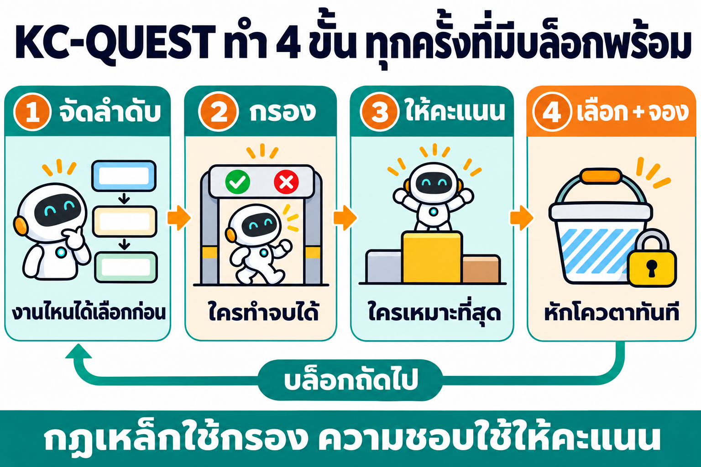
| ขั้น | คำถาม | ใช้อะไรตอบ |
|---|---|---|
| ① จัดลำดับ | บล็อกไหนได้เลือกก่อน | จำนวนทางเลือก แล้วจึง rank |
| ② กรอง | บัญชีไหนทำจบได้ | โควตา 2 ถัง และ slot |
| ③ ให้คะแนน | ใครเหมาะที่สุด | คะแนนรวมจาก 5 ตัวแปร |
| ④ เลือก + จอง | – | คะแนนสูงสุด แล้วหักโควตาทันที |
เวลา t = 0
วนจนทุกบล็อกได้บัญชี:
ready ← บล็อกที่บล็อกก่อนหน้าเสร็จครบ
① เรียง ready
สำหรับแต่ละบล็อกตามลำดับ:
② หาบัญชีที่ทำจบได้
③ ให้คะแนน
④ เลือกคะแนนสูงสุด แล้วจอง
เลื่อน t ไปเวลาที่บล็อกถัดไปเสร็จ
แล้วคืน slot ของบล็อกนั้นpython tools/kclab.py rounds --png
| รอบ | นาทีที่ | บล็อกที่พร้อม (เรียงตาม ①) | ได้งาน |
|---|---|---|---|
| 1 | 0 | B01, B03, B02, B04 | B01→cyolo2 · B03→cyolo1 · B02→yolo2 · B04→yolo2 + yolo3 + cyolo1 |
| 2 | 5 | B06 | B06→yolo2 |
| 3 | 7.5 | B07, B05 | B07→cyolo2 · B05→yolo2 + cyolo1 |
| 4 | 26.2 | B08 | B08→yolo2 |
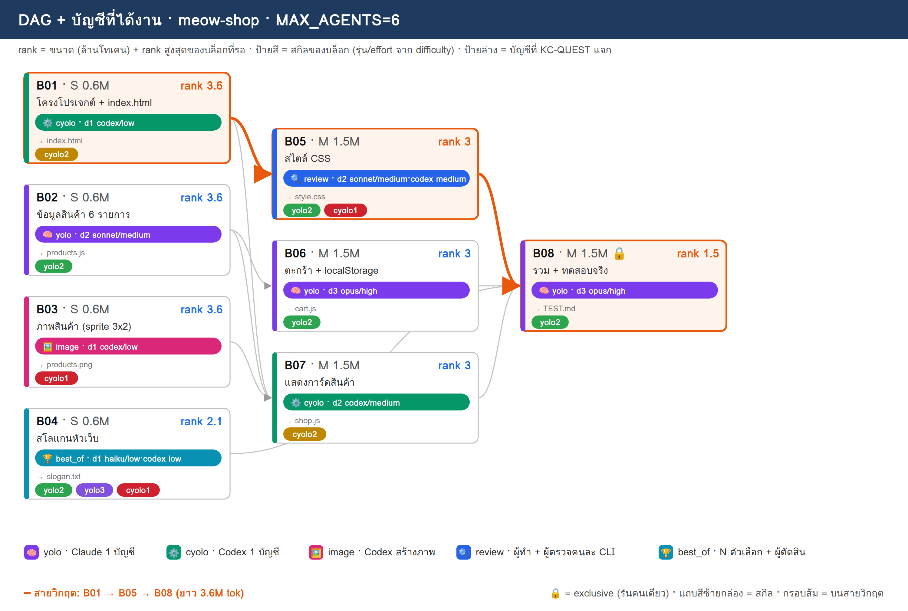
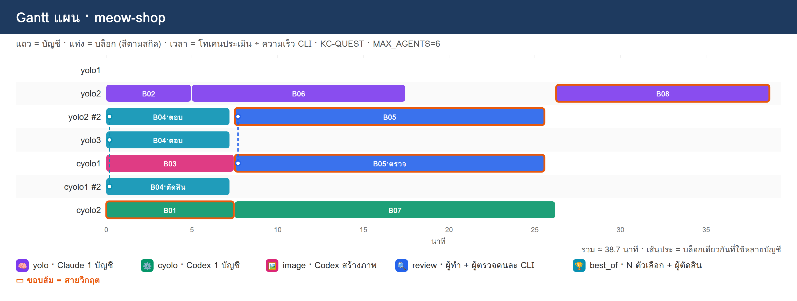
| บัญชี | บทบาท | จอง |
|---|---|---|
| yolo1 | 0 | 0 |
| yolo2 | 5 | 5.7M |
| yolo3 | 1 | 0.6M |
| cyolo1 | 3 | 1.23M |
| cyolo2 | 2 | 2.1M |
ส่วนที่ 4 จะตอบทีละข้อ
| คำถาม | คำตอบอยู่ที่ |
|---|---|
| ทำไม B01 และ B03 ได้เลือกก่อน B02 | ขั้น ① จัดลำดับ |
| ทำไม yolo1 ไม่ได้งานเลย | ขั้น ② กรอง |
| ทำไม yolo2 ได้งานมากที่สุด | ขั้น ③ ให้คะแนน |
| ทำไม B03 ไม่ไป cyolo2 เหมือน B01 | ขั้น ④ เลือก + จอง |
KC-QUEST ทีละขั้น ด้วยตัวเลขจริง
ทุกตารางคัดมาจาก python tools/kclab.py explain --round 1
จัดลำดับ
บล็อกไหนได้เลือกบัญชีก่อน · บล็อกที่เลือกทีหลังเหลือบัญชีให้เลือกน้อยลง
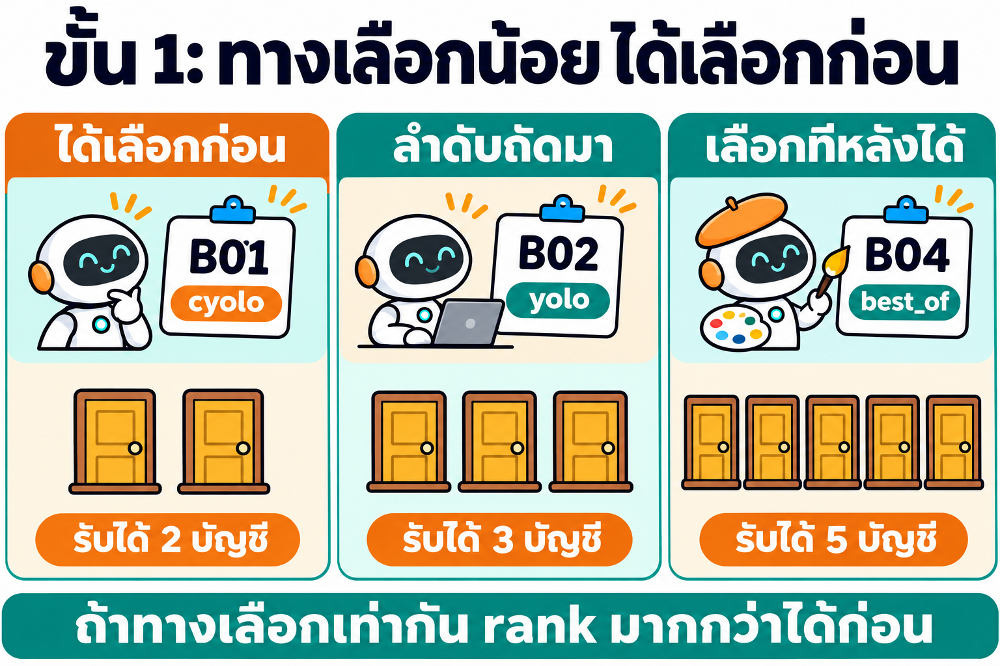
| ชั้น | กติกา | เหตุผล |
|---|---|---|
| 1 | บัญชีที่รับได้ น้อยกว่า ได้ก่อน | ปล่อยไว้อาจถูกแย่งจนไม่เหลือบัญชี |
| 2 | rank มากกว่า ได้ก่อน | ช้าแล้วทั้งโปรเจกต์ช้า |
| 3 | ขนาด ใหญ่กว่า ได้ก่อน | งานใหญ่หาบัญชีรับยากกว่า |
| ลำดับ | บล็อก | สกิล | รับได้ | rank |
|---|---|---|---|---|
| 1 | B01 | cyolo | 2 | 3.6 |
| 2 | B03 | image | 2 | 3.6 |
| 3 | B02 | yolo | 3 | 3.6 |
| 4 | B04 | best_of | 5 | 2.1 |
rank ของ B01, B02, B03 เท่ากัน สิ่งที่ทำให้ B01 และ B03 ได้ก่อนคือสกิลที่บังคับฝั่ง Codex ซึ่งมีแค่ 2 บัญชี
กรอง
บัญชีไหนทำบล็อกนี้จนจบได้ · งานที่ชนเพดานกลางทางเสียทั้งเวลาและโทเคน
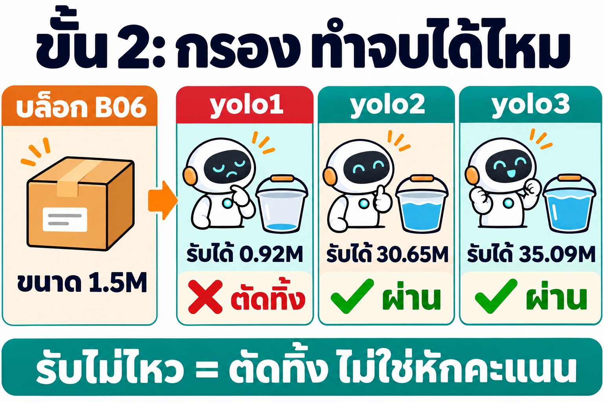
| ส่วนของสูตร | ความหมาย | ทำไมต้องมี |
|---|---|---|
| H − m | โควตาที่ใช้ได้จริง | เหลือระยะเผื่อ m = โควตาที่ใช้ใน 15 นาที (ไม่ต่ำกว่า 2%) |
| ÷ r | แปลง % เป็นล้านโทเคน | ให้หน่วยเดียวกับขนาดงาน |
| ÷ σ (1.3) | คิดเหมือนงานใหญ่กว่าที่ประเมิน 30% | ขนาด S / M / L เป็นค่าประเมิน |
| min | เอาถังที่รับได้น้อยกว่า | ถังไหนหมดก่อน งานก็หยุด |
| บัญชี | งานที่ทำอยู่ | ถัง 5 ชม. | ถังสัปดาห์ | C | ผล |
|---|---|---|---|---|---|
| yolo1 | 0 | (6 − 3.6) ÷ 2.6 = 0.92 | (80 − 2) ÷ 0.325 = 240 | 0.92 | ✗ 1.5 > 0.92 |
| yolo2 | 1 | (86.88 − 7.2) ÷ 2.6 = 30.65 | (44.6 − 2) ÷ 0.325 = 131.08 | 30.65 | ✓ |
| yolo3 | 1 | (98.44 − 7.2) ÷ 2.6 = 35.09 | (94.8 − 2) ÷ 0.325 = 285.54 | 35.09 | ✓ |
- yolo1 รับได้แค่ 0.92 ล้านโทเคน จึงถูกตัดจากทุกบล็อกขนาด M ส่วนบล็อก S ผ่านกรองแต่แพ้คะแนน → ไม่ได้งานเลย
- yolo2 และ yolo3 ทำงานอยู่ 1 งาน ระยะเผื่อจึงเป็น 3.6 × 2 = 7.2
- ถัง 5 ชม. ที่กำลังจะรีเซ็ต: KC-QUEST นับโควตาของรอบใหม่เพิ่มให้
ให้คะแนน
ในบัญชีที่ผ่านกรอง ใครเหมาะที่สุด · รวมหลายเป้าหมายเป็นเลขเดียว
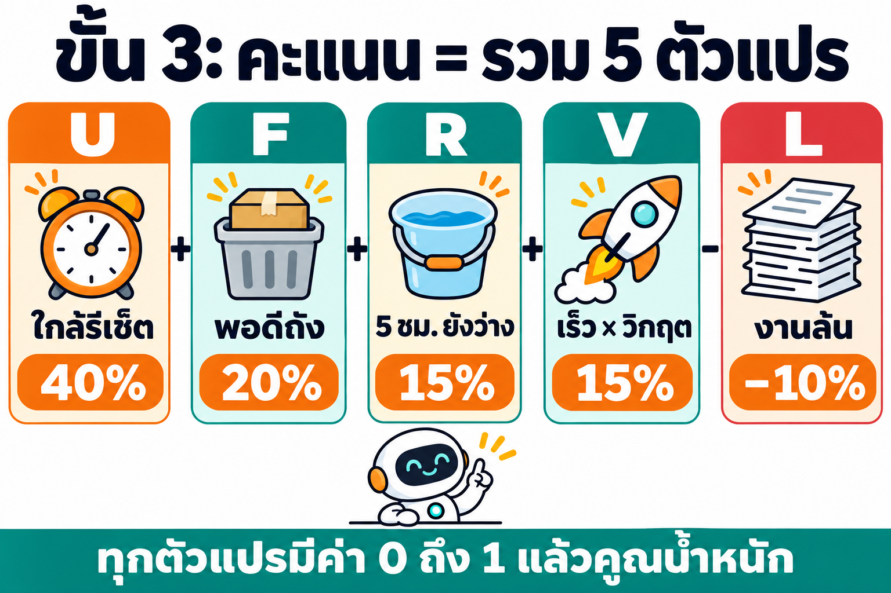
| ตัวแปร | สูตร | ค่าสูงเมื่อ | เป้าหมาย |
|---|---|---|---|
| U ใกล้รีเซ็ต | 24 ÷ (24 + T) | ถังสัปดาห์ใกล้รีเซ็ต | ใช้โควตาที่กำลังจะหายก่อน |
| F พอดีถัง | min(1, σrwc ÷ Hw) | งานกินถังสัปดาห์เป็นสัดส่วนมาก | เก็บถังใหญ่ไว้ให้งานใหญ่ |
| R 5 ชม. ยังว่าง | (H5 − σr5c) ÷ 100 | รับงานแล้วถัง 5 ชม. ยังเหลือมาก | ไม่เข้าใกล้เพดานของรอบ |
| V เร็ว × วิกฤต | vฝั่ง × κ | บัญชีเร็ว และบล็อกใกล้สายวิกฤต | บล็อกสำคัญไปบัญชีเร็ว |
| L งานล้น | งานที่ทำอยู่ ÷ slot | บัญชีทำหลายงานอยู่แล้ว | น้ำหนักติดลบ ช่วยกระจายงาน |
โควตาสัปดาห์ที่เหลือตอนรีเซ็ตจะหายไป บัญชีที่ใกล้รีเซ็ตจึงควรถูกใช้ก่อน · U มีน้ำหนักมากที่สุด 40%
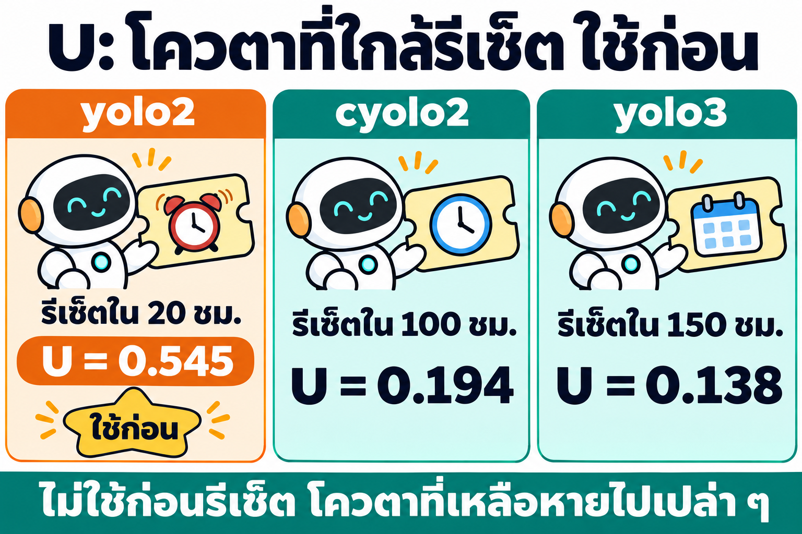
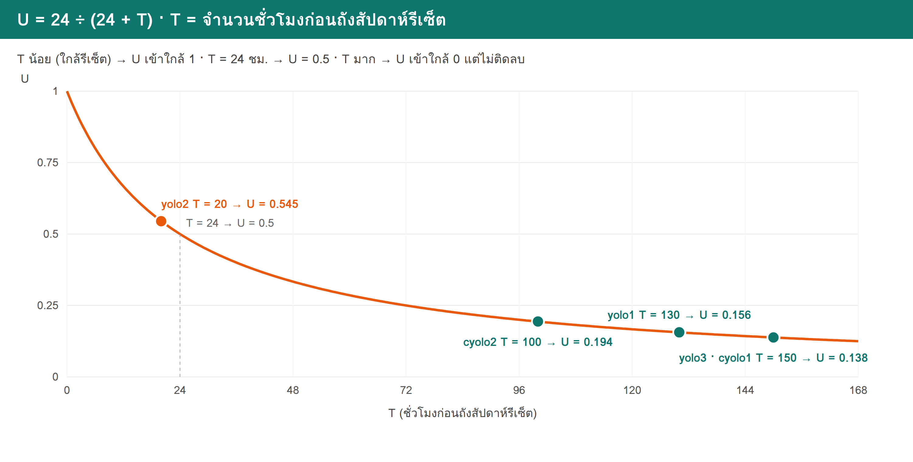
- T น้อย → U เข้าใกล้ 1
- T มาก → U เข้าใกล้ 0 ไม่ติดลบ
- ไม่ต้องรู้ค่าสูงสุดของ T
- เหลือ 24 ชม. ได้ U = 0.5 พอดี
| บัญชี | U | F | R | V | L | คะแนน S |
|---|---|---|---|---|---|---|
| yolo1 | 0.156 | 0.002 | (6 − 1.56) ÷ 100 = 0.044 | 1.0 | 0 | 21.9 |
| yolo2 | 0.545 | 0.004 | (90 − 1.56) ÷ 100 = 0.884 | 1.0 | 0 | 50.1 |
| yolo3 | 0.138 | 0.002 | (100 − 1.56) ÷ 100 = 0.984 | 1.0 | 0 | 35.3 |
- yolo3 มี R ดีกว่า แต่ U ของ yolo2 ห่างกันมาก yolo2 จึงชนะ 50.1 ต่อ 35.3
- yolo1 ผ่านกรอง แต่ R เหลือ 0.044 เพราะถัง 5 ชม. เกือบหมด
เลือก + จอง
คะแนนสูงสุดได้บล็อก แล้วหักโควตาและ slot ทันที ก่อนพิจารณาบล็อกถัดไป
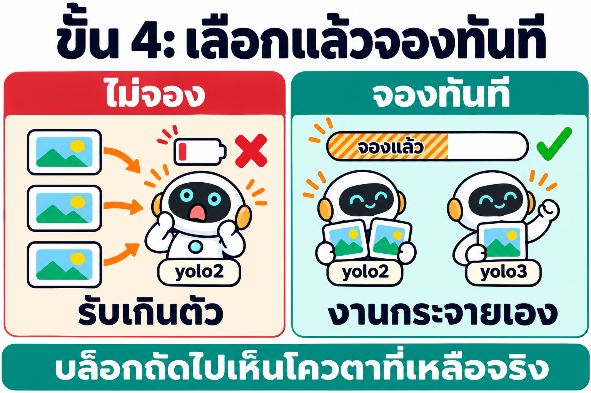
| ลำดับ | บล็อก | ผู้ชนะ | คะแนน | อันดับ 2 | เกิดอะไรขึ้น |
|---|---|---|---|---|---|
| 1 | B01 | cyolo2 | 33.6 | cyolo1 30.8 | U และ F สูงกว่า · จองแล้ว slot ของ cyolo2 เต็ม (1 จาก 1) |
| 2 | B03 | cyolo1 | 30.8 | – | cyolo2 ถูกตัดเพราะ slot เต็ม |
| 3 | B02 | yolo2 | 50.1 | yolo3 35.3 | U ของ yolo2 นำห่าง |
| 4 | B04 ตอบคนที่ 1 | yolo2 | 40.3 | yolo3 29.1 | L = 0.333 ถูกหัก 3.3 คะแนน แต่ยังชนะ |
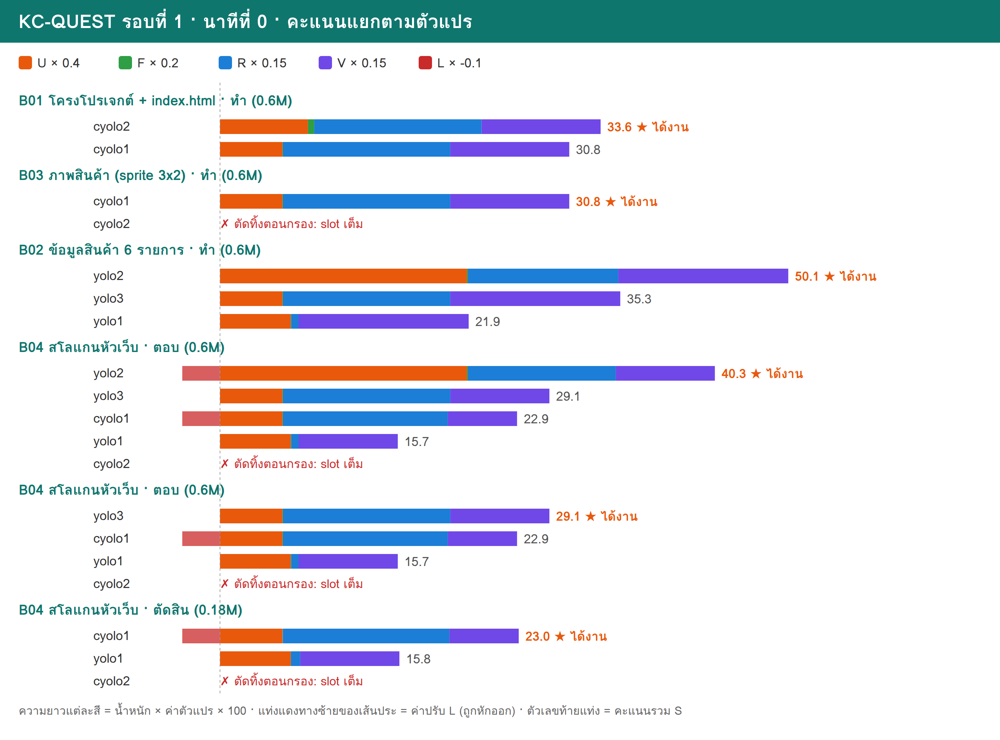
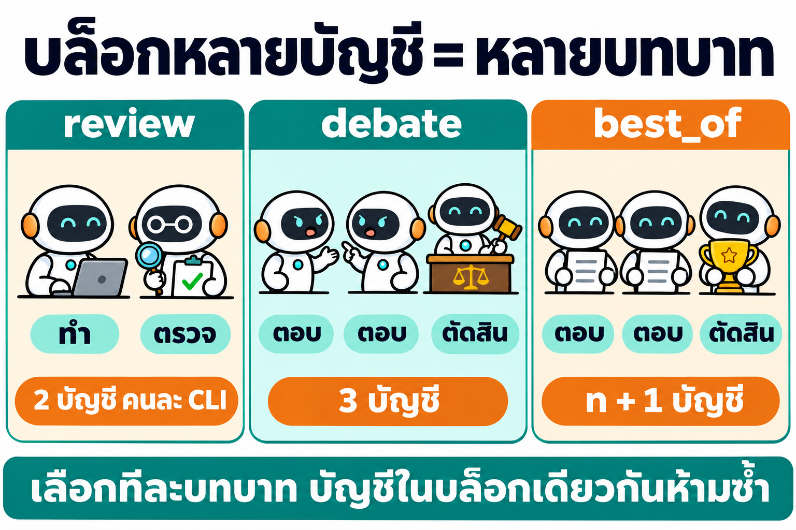
| สกิล | บทบาท (โทเคน) | ข้อบังคับ |
|---|---|---|
| yolo | ทำ c | ต้องเป็น Claude |
| cyolo · image | ทำ c | ต้องเป็น Codex |
| review | ทำ c → ตรวจ 0.3c | ผู้ตรวจคนละ CLI |
| debate | ตอบ c × 2 → ตัดสิน 0.3c | Claude 1 · Codex 1 |
| best_of | ตอบ c × n → ตัดสิน 0.3c | – |
- บัญชีในบล็อกเดียวกัน ห้ามซ้ำ
- บทบาทใดไม่มีบัญชีรับ → คืนการจองทั้งบล็อก รอรอบถัดไป
B04 (best_of, n = 2) ในรอบที่ 1
| บทบาท | โทเคน | ผู้ชนะ | คะแนน |
|---|---|---|---|
| ตอบคนที่ 1 | 0.6M | yolo2 | 40.3 |
| ตอบคนที่ 2 | 0.6M | yolo3 | 29.1 |
| ตัดสิน | 0.18M | cyolo1 | 23.0 |
B05 (review) ในรอบที่ 3: ผู้ทำคือ yolo2 ผู้ตรวจจึงต้องเป็น Codex และ cyolo2 slot เต็ม ผู้ตรวจจึงเป็น cyolo1
| บล็อก | คำนวณ | เวลา |
|---|---|---|
| B02 (yolo2) | 0.6 ÷ 7.2 ชม. | 5 นาที |
| B01 (cyolo2) | 0.6 ÷ 4.8 ชม. | 7.5 นาที |
| B04 (yolo2 + yolo3 ตอบ · cyolo1 ตัดสิน) | 0.6 ÷ 7.2 + 0.18 ÷ 4.8 ชม. | 5 + 2.25 = 7.25 นาที |
| B05 (yolo2 ทำ · cyolo1 ตรวจ) | 1.5 ÷ 7.2 + 0.45 ÷ 4.8 ชม. | 12.5 + 5.6 = 18.1 นาที |
รันจริง · ทฤษฎี · ดีแค่ไหน
แผนมาจาก ค่าประเมิน · ของจริงต่างได้ · และวิธีนี้เทียบกับวิธีอื่นเป็นอย่างไร
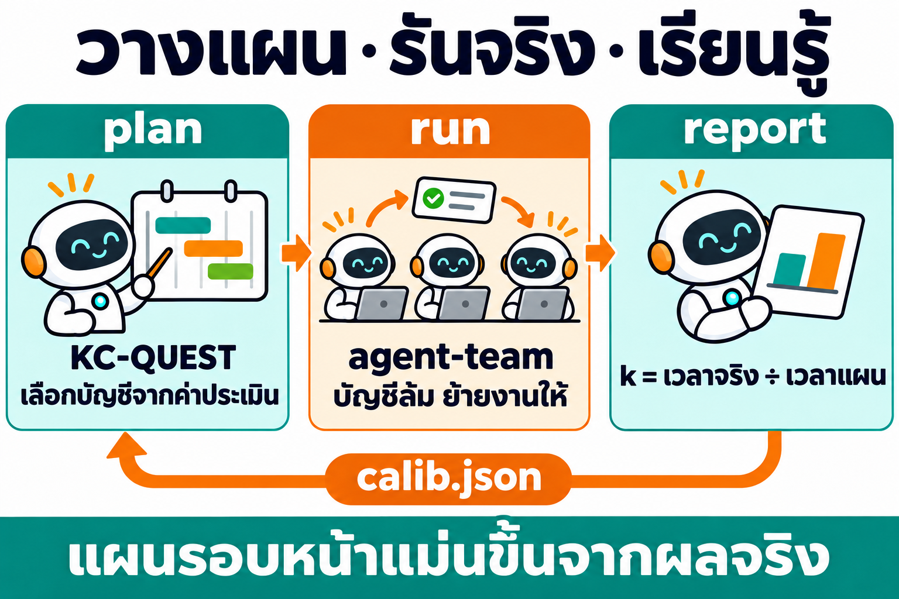
| ช่วง | ใครรับผิดชอบ | ทำอะไร |
|---|---|---|
วางแผน plan | KC-QUEST ใน dag-planner | ขั้น ①–④ และเผื่อความคลาดเคลื่อนด้วย σ กับ m |
ส่งแผน export | dag-planner | ส่งงานเป็นฝั่ง (yolo / cyolo) ไม่ผูกบัญชีเจาะจง |
รันจริง run | base skill agent-team | เลือกบัญชีในฝั่งตามโหลดจริง · โควตาถึง 80% หยุดรับงานใหม่ · บัญชีล้ม ย้ายงานให้ |
สรุปผล report | dag-planner | เทียบแผนกับของจริง แล้วคำนวณตัวปรับเวลา k |
--accounts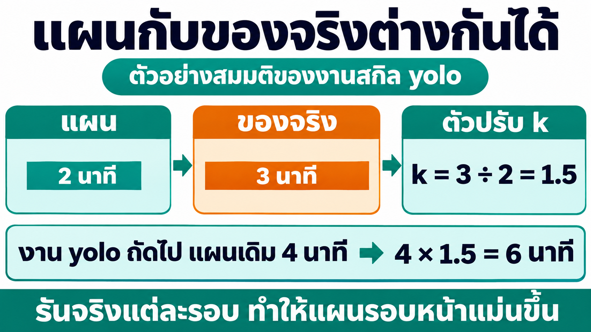
- เก็บใน
calib.jsonแล้ว plan ครั้งถัดไปคูณเวลาด้วย k - เหมียวช็อปในบท 05: แผน 1.7 → จริง 2.8 → แผนใหม่ 2.8 นาที
- k ปรับเฉพาะเวลา ไม่เปลี่ยนว่าบัญชีไหนได้บล็อกไหน
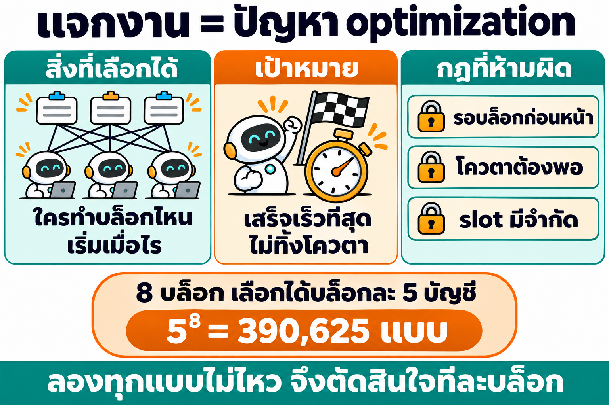
(1) ทุกบทบาทมี 1 บัญชี
(2) รอบล็อกก่อนหน้า
(3) ถัง 5 ชม. ต้องพอ
(4) ถังสัปดาห์ต้องพอ
(5) slot มีจำกัด
ทางเลือกมากเกินไป
8 บล็อก 5 บัญชี = 58 = 390,625 แบบ ยังไม่นับลำดับเวลา
ยากในทางทฤษฎี (NP-hard)
รวมปัญหาจัดงานที่มีลำดับให้หลายเครื่อง กับ bin packing
ข้อมูลไม่แน่นอน
ขนาดงานและอัตรากินโควตาเป็นค่าประเมิน
หลักคิด 6 ข้อ
| หลักคิด | แปลว่า | ขั้น |
|---|---|---|
| ตัดสินใจทีละบล็อก (greedy) | มีบล็อกพร้อมเมื่อไรก็แจกทันที ไม่ลองทุกแบบ | วงรอบ |
| เรียงลำดับให้ดี | บล็อกที่มีทางเลือกน้อยและ rank สูงได้ก่อน | ① |
| กฎเหล็กใช้กรอง | ข้อที่ผิดไม่ได้ ไม่นำไปปนกับคะแนน | ② |
| รวมหลายเป้าหมายเป็นเลขเดียว | ปรับให้อยู่ช่วง 0–1 แล้วถ่วงน้ำหนัก | ③ |
| จองทันที | บล็อกถัดไปเห็นโควตาที่เหลือจริง | ④ |
| เผื่อไว้ แล้วเรียนรู้จากของจริง | σ และ m ตอนวางแผน แล้วปรับ k หลังรัน | ② · report |
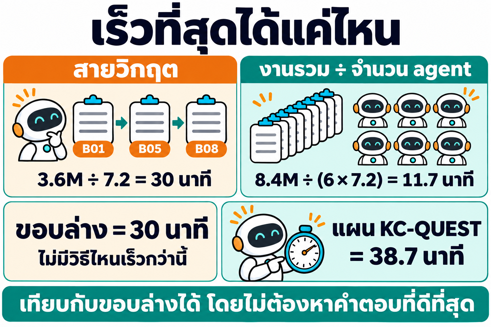
| สาเหตุของส่วนต่าง 8.7 นาที | เวลาที่เพิ่ม |
|---|---|
| B01 ต้องใช้ Codex ซึ่งช้ากว่า (4.8 แทน 7.2) | 2.5 นาที |
| B05 เป็น review มีผู้ตรวจต่อท้าย | 5.6 นาที |
| B08 ต้องรอ B07 ที่จบช้ากว่า B05 เล็กน้อย | 0.6 นาที |
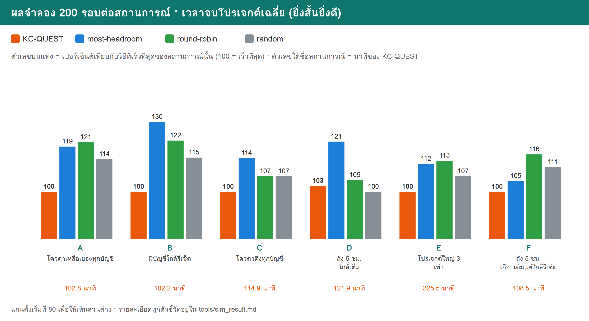
| สถานการณ์ | KC-QUEST | most-headroom | round-robin | random |
|---|---|---|---|---|
| A โควตาเหลือเยอะทุกบัญชี | 102.8 | 122.6 | 124.5 | 117.1 |
| B มีบัญชีใกล้รีเซ็ต | 102.2 | 132.6 | 124.5 | 117.1 |
| C โควตาตึงทุกบัญชี | 114.9 | 131.4 | 122.5 | 122.5 |
| D ถัง 5 ชม. ใกล้เต็ม | 121.9 | 144.3 | 124.8 | 118.9 |
| E โปรเจกต์ใหญ่ 3 เท่า | 325.5 | 364.2 | 368.5 | 347.0 |
| F ถัง 5 ชม. เกือบเต็มแต่ใกล้รีเซ็ต | 108.5 | 113.5 | 125.8 | 119.9 |
- เร็วที่สุด 5 จาก 6 สถานการณ์ · สถานการณ์ B ใช้โควตาจากบัญชีใกล้รีเซ็ต 69.1% (most-headroom 0%)
- ข้อจำกัด: สถานการณ์ D ช้ากว่าการสุ่ม 2.5% เพราะระยะเผื่อทำให้บางงานต้องรอ · KC-QUEST ไม่รับประกันว่าดีที่สุดทุกกรณี
ลองเอง และแบบฝึกหัด
ทุกคำสั่งรันบนเครื่องได้เลย · ไม่ใช้โทเคน
เปิด terminal ที่โฟลเดอร์ 06_KC_QUEST
python tools/kclab.py doctor # ตรวจ python · base skills · ตัวแปลงภาพ python tools/kclab.py rank # ① rank ทีละบล็อก · สายวิกฤต python tools/kclab.py rounds --png # รอบแจกงานทั้งหมด + DAG + Gantt python tools/kclab.py explain --round 1 # ทุกตัวเลขของรอบที่ 1 python tools/kclab.py explain --round 3 --png # พร้อมภาพแท่งคะแนน
อยู่ในโฟลเดอร์ 06_KC_QUEST ใช้ python tools/kclab.py (ดูวิธีใช้ด้วย --help) ห้ามแก้ไฟล์ใน base_skills 1. รันคำสั่ง rounds แล้ว explain รอบที่ 3 แบบ --png 2. อธิบายเป็นภาษาไทยสั้น ๆ ว่ารอบนั้น ① เรียงบล็อกอย่างไร ② บัญชีไหนถูกตัด เพราะอะไร ③ ตัวแปรไหนทำให้ผู้ชนะชนะ ④ หลังจองแล้วโควตาของผู้ชนะเปลี่ยนอย่างไร 3. บอก path ของภาพ round-3.png
python tools/kclab.py rounds --weights urgency=0 --out out/w_u0 python tools/kclab.py rounds --weights load=-0.4 --out out/w_l4
| น้ำหนัก | yolo2 (ใกล้รีเซ็ต) | yolo3 (เต็มทุกถัง) | เวลารวม | สิ่งที่เปลี่ยน |
|---|---|---|---|---|
| ปกติ (U 0.4) | 5 บทบาท · 5.7M | 1 · 0.6M | 38.7 นาที | – |
| ปิด U | 2 · 2.1M | 4 · 4.2M | 38.7 นาที | B02, B06, B08 ย้ายไป yolo3 |
| L แรงขึ้น | 5 · 5.7M | 1 · 0.6M | 38.7 นาที | ผู้ตัดสินของ B04 ย้ายไป yolo1 |
python tools/kclab.py rounds --set yolo2.week_reset_h=200 python tools/kclab.py rounds --max-agents 4
| ลองแก้ | ผล |
|---|---|
--set yolo2.week_reset_h=200 | U ของ yolo2 เหลือ 0.107 งานของฝั่ง Claude ย้ายไป yolo3 เป็นหลัก |
--max-agents 4 | B04 ต้องใช้ 3 agent แต่ที่ว่างเหลือ 1 จึงรอถึงนาทีที่ 25.6 เวลารวมเป็น 45.4 นาที |
--set cyolo2.week_left=2 | cyolo2 ได้ 0 slot งานฝั่ง Codex ทั้งหมดไป cyolo1 |
ฟิลด์ที่แก้ได้: session_left · week_left · week_reset_h · session_reset_h
export DAGPLAN_DIR=out/plans D=base_skills/dag-planner/scripts/dagplan.py python $D dag meow-shop --blocks examples/meow-shop/blocks.json python $D plan meow-shop --accounts yolo1:6,yolo2:90,yolo3:100,cyolo1:100,cyolo2:100
| kclab.py | dagplan.py plan | |
|---|---|---|
| ที่มาของโควตา | ไฟล์สถานการณ์ ครบ 2 ถังและเวลารีเซ็ต | โควตาจริงจาก team.py quota หรือ --accounts บัญชี:% |
| ผลที่ได้ | ตารางตัวเลขทุกขั้น | PLAN.md · dag.png · gantt-plan.png |
ข้อ 1–4
rank ของ B02 เท่าไร (ขนาด S · บล็อกที่รอคือ B06 rank 3 และ B07 rank 3)
ความจุของ cyolo2 ตอนเริ่มรอบที่ 1 เท่าไร และถังไหนเป็นตัวจำกัด
คะแนนของ yolo3 สำหรับ B02 (U 0.138 · F 0.002 · R 0.984 · V 1.0 · L 0)
B01 ได้ cyolo2 แต่ทำไม B03 ที่ได้เลือกถัดมาไม่ไป cyolo2 ด้วย
ข้อ 5–8
ถ้า yolo2 จะรีเซ็ตใน 200 ชั่วโมงแทน 20 ชั่วโมง B02 จะไปบัญชีไหน
ถ้าจำกัด --max-agents 4 รอบที่ 1 ต่างจากเดิมอย่างไร และเวลารวมเป็นเท่าไร
yolo1 เหลือ 6% แต่ถัง 5 ชม. จะรีเซ็ตในอีก 6 นาที จะผ่านกรองสำหรับ B06 ไหม และจะได้งานไหม
ถ้าแต่ละบัญชีมีค่าใช้จ่ายต่อโทเคนไม่เท่ากัน ควรเพิ่มเป็นกฎเหล็ก (②) หรือคะแนน (③)
| ข้อ | คำตอบ |
|---|---|
| 1 | 0.6 + max(3, 3) = 3.6 ใช้ค่ามากที่สุด เพราะ B06 และ B07 ทำพร้อมกันได้ |
| 2 | min(37.54, 15.38) = 15.38 ถังสัปดาห์เป็นตัวจำกัด |
| 3 | 100 × (0.0552 + 0.0004 + 0.1476 + 0.15) = 35.3 แพ้ yolo2 ที่ได้ 50.1 |
| 4 | cyolo2 มีแค่ 1 slot B01 จองไปแล้ว slot จึงเต็ม |
| 5 | U = 24 ÷ 224 = 0.107 → S = 32.6 น้อยกว่า yolo3 (35.3) → yolo3 |
| 6 | B04 ต้องใช้ 3 agent แต่เหลือ 1 จึงรอถึงนาทีที่ 25.6 เวลารวม 45.4 นาที |
| 7 | ผ่านกรอง (ความจุ 37.8) แต่คะแนน 19.2 แพ้ yolo2 (43.6) จึงไม่ได้งาน |
| 8 | งบห้ามเกิน = กฎเหล็ก (②) · อยากให้ถูกไว้ก่อน = ตัวแปรคะแนน (③) |
KC-QUEST ใน 1 หน้า
| ขั้น | ทำอะไร | ตัวอย่างจากบทนี้ |
|---|---|---|
| ① จัดลำดับ | ทางเลือกน้อยก่อน แล้ว rank มากก่อน | B01 และ B03 ได้ก่อน B02 |
| ② กรอง | ตัดบัญชีที่ทำไม่จบ | yolo1 รับได้ 0.92M ถูกตัดจากบล็อก M |
| ③ ให้คะแนน | รวม 5 ตัวแปร U F R V L | yolo2 ได้ 50.1 เพราะ U = 0.545 |
| ④ เลือก + จอง | คะแนนสูงสุดได้งาน หักโควตาทันที | cyolo2 slot เต็ม B03 จึงไป cyolo1 |
| หลายบัญชี | ทำ ②③④ ทีละบทบาท ห้ามบัญชีซ้ำ | B04 ได้ yolo2 + yolo3 + cyolo1 |
| เรียนรู้ | k = เวลาจริง ÷ เวลาแผน | แผน 1.7 → จริง 2.8 → แผนใหม่ 2.8 นาที |
จำ 3 ข้อนี้
ข้อควรรู้
วางแผนจากค่าประเมิน
บัญชีที่รันจริงอาจต่างจากแผน agent-team เลือกบัญชีในฝั่งเองและย้ายงานเมื่อบัญชีล้ม
เวลารวมไม่ได้บอกทุกอย่าง
สองแผนที่เวลาเท่ากันอาจต่างกันที่โควตาซึ่งถูกทิ้งตอนรีเซ็ต
บล็อกหลายบัญชี
ต้องมีบัญชีที่ต่างกันพอ และ --max-agents มากพอ
เป็น heuristic
เร็วและดีพอ แต่ไม่รับประกันว่าดีที่สุดทุกกรณี (สถานการณ์ D)
k ปรับเฉพาะเวลา
ไม่เปลี่ยนว่าบัญชีไหนได้บล็อกไหน
ห้ามแก้ base_skills
ถ้าผลไม่ตรง kclab.py จะแจ้ง และ test_kclab.py บอกว่าตัวเลขใดต้องปรับ
ทำครบหรือยัง?
กรองด้วยกฎเหล็ก
เลือกด้วยคะแนน แล้วจองทันที
แผนมาจากค่าประเมิน แล้วเรียนรู้จากผลรันจริงด้วย k
รายละเอียดทุกขั้น สมการ และเฉลยแบบฝึกหัดอยู่ใน readme.md